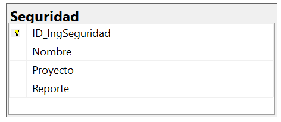

Imagen de la Tabla de Seguridad

Pertinencia de la Arquitectura de la Base de Datos
La arquitectura del subsistema de Seguridad es pertinente porque permite llevar el control de los reportes de inspección y medidas preventivas en la obra, garantizando un ambiente seguro para los trabajadores.
Propósito
Su propósito es centralizar la información de inspecciones, reportes y proyectos asignados a ingenieros de seguridad, para mejorar la prevención de accidentes y el cumplimiento de normativas.
Campos de la Tabla
- ID_Reporte: Identificador único del reporte.
- Ingeniero: Nombre del ingeniero responsable.
- Proyecto: Proyecto en el que se realiza la inspección.
- Fecha: Fecha del reporte.
- Descripcion: Observaciones sobre seguridad e higiene.
- Estado: Estado del reporte (Pendiente, Resuelto, En seguimiento).
Normalización
1NF:
Todos los valores son atómicos, sin listas ni repeticiones en campos.
2NF:
Todos los atributos dependen completamente de la clave primaria (ID_Reporte).
3NF:
No existen dependencias transitivas entre atributos.
Código SQL para Crear la Tabla
CREATE TABLE Seguridad (
ID_Reporte INT PRIMARY KEY,
Ingeniero VARCHAR(100) NOT NULL,
Proyecto VARCHAR(100) NOT NULL,
Fecha DATE NOT NULL,
Descripcion TEXT,
Estado VARCHAR(50)
);
Código SQL para Insertar Registros
INSERT INTO Seguridad (ID_Reporte, Ingeniero, Proyecto, Fecha, Descripcion, Estado)
VALUES
(1, 'Ana Martínez', 'Edificio A', '2025-01-10', 'Inspección de cascos y arneses', 'Resuelto'),
(2, 'Pedro López', 'Planta Industrial', '2025-02-05', 'Se detectaron áreas sin señalización', 'Pendiente'),
(3, 'Laura Torres', 'Conjunto Habitacional', '2025-02-20', 'Revisión de equipo de seguridad contra incendios', 'En seguimiento'),
(4, 'Miguel Sánchez', 'Edificio B', '2025-03-01', 'Uso inadecuado de maquinaria sin EPP', 'Pendiente'),
(5, 'Ana Martínez', 'Carretera Federal', '2025-03-15', 'Reporte de accidente menor en excavación', 'Resuelto');
Registros de la Tabla
| ID_Reporte | Ingeniero | Proyecto | Fecha | Descripción | Estado |
|---|---|---|---|---|---|
| 1 | Ana Martínez | Edificio A | 2025-01-10 | Inspección de cascos y arneses | Resuelto |
| 2 | Pedro López | Planta Industrial | 2025-02-05 | Se detectaron áreas sin señalización | Pendiente |
| 3 | Laura Torres | Conjunto Habitacional | 2025-02-20 | Revisión de equipo de seguridad contra incendios | En seguimiento |
| 4 | Miguel Sánchez | Edificio B | 2025-03-01 | Uso inadecuado de maquinaria sin EPP | Pendiente |
| 5 | Ana Martínez | Carretera Federal | 2025-03-15 | Reporte de accidente menor en excavación | Resuelto |